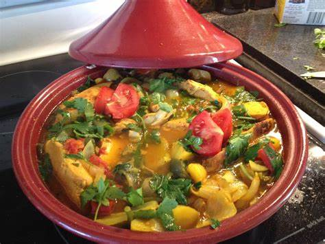
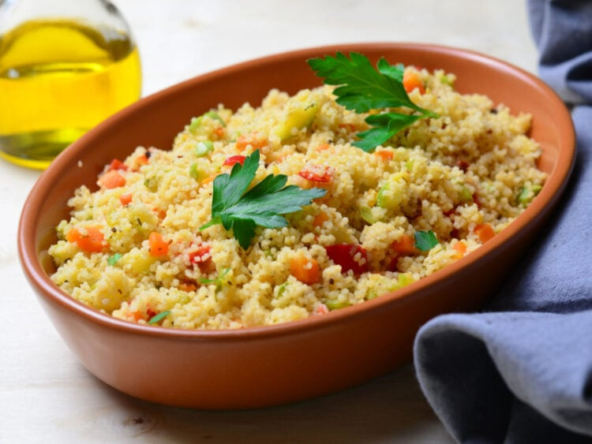
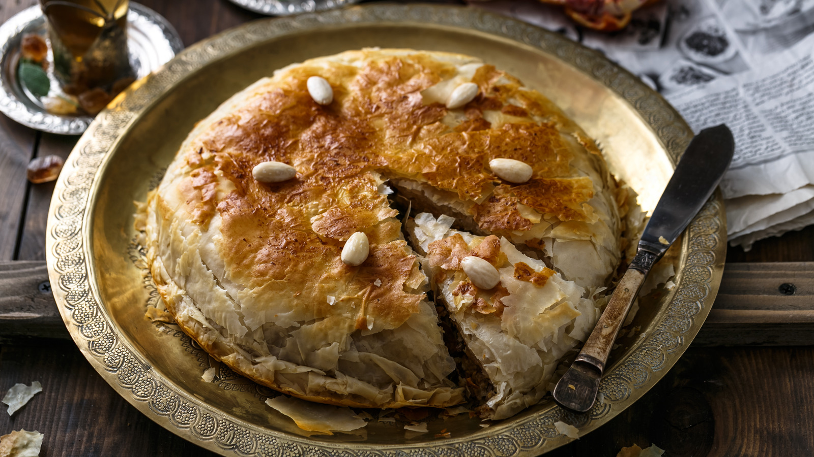
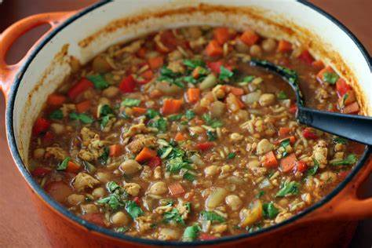
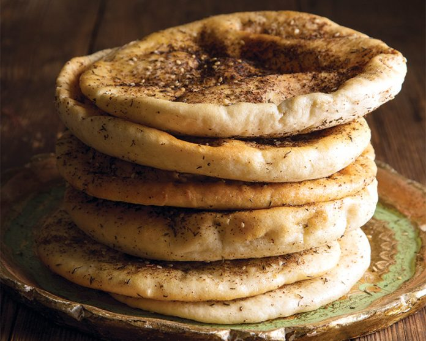
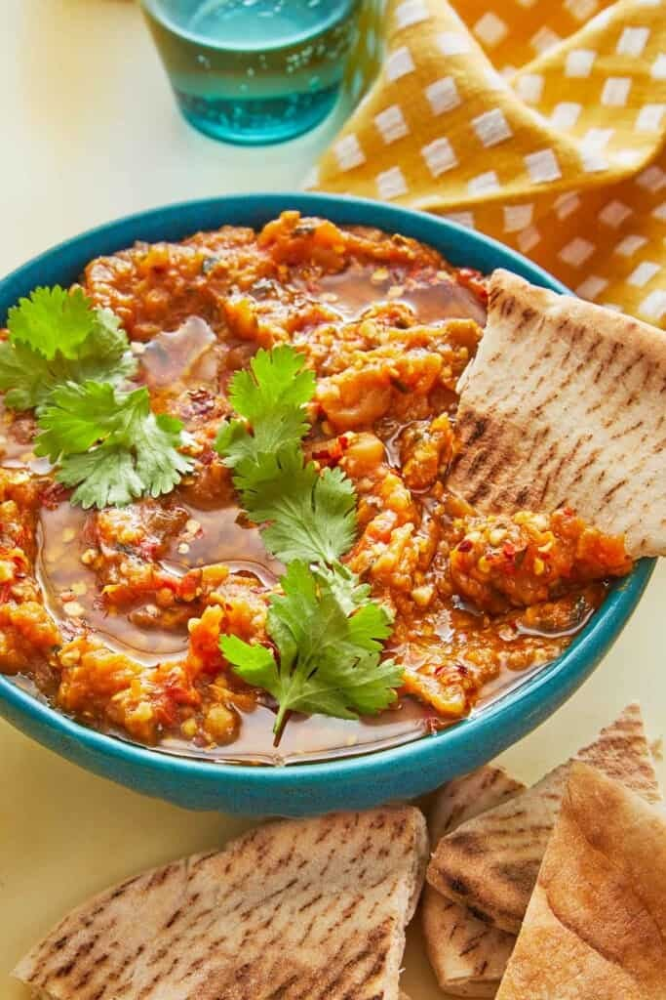
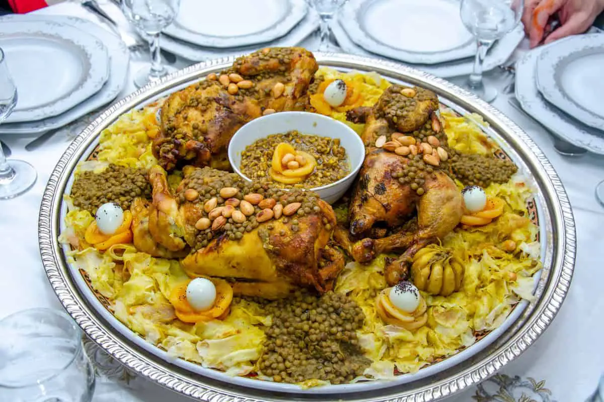

TAGINE
Slow-cooked stew named after the clay pot it's made in; comes in many varieties (lamb, chicken, veggie, etc.).
LEARN MORE

COUSCOUS
Traditional Berber dish of steamed semolina grains, typically served with vegetables and meat.
LEARN MORE

PASTILLA
Sweet and savory pie traditionally made with pigeon, now often with chicken or seafood.
LEARN MORE

HARIRA
Traditional soup with tomatoes, lentils, chickpeas, and herbs; often served during Ramadan.
LEARN MORE
MAGHREBI MINT TEA
Green tea infused with fresh mint leaves and sweetened with sugar; a symbol of Moroccan hospitality.
LEARN MORE


ZAALOUK
Cooked eggplant and tomato salad seasoned with garlic, cumin, paprika, and olive oil.
LEARN MORE

RFISSA
Shredded crepes topped with chicken, lentils, and a fragrant blend of herbs and spices.
LEARN MORE